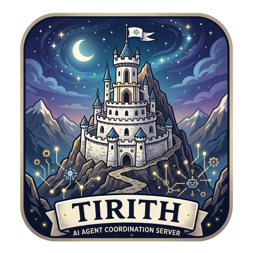

Tirith
Coordination server for parallel coding agents.
File claims with leases, a task board, interface contracts, change notices, and a decisions log, over MCP. One small daemon per repository. Works with Claude Code, Cursor, Codex, LangGraph, CrewAI, or a plain script.


# macOS and Linux
curl -LsSf https://eabz.github.io/tirith/install.sh | sh
Install
Tirith ships as a single static binary per platform and as the crate tirith-mcp on crates.io. The binary is always called tirith. Pick whichever fits.
curl -LsSf https://eabz.github.io/tirith/install.sh | sh
The shim fetches the installer attached to the latest GitHub release. It detects your OS and CPU, downloads the matching archive, verifies its checksum, installs tirith into $CARGO_HOME/bin (~/.cargo/bin by default, created if missing), and tells you if your PATH needs a line.
Pin a version with TIRITH_VERSION=v0.1.2 in front of the command. To skip the shim, the release asset itself is the same installer:
curl --proto '=https' --tlsv1.2 -LsSf https://github.com/eabz/tirith/releases/latest/download/tirith-mcp-installer.sh | sh
irm https://eabz.github.io/tirith/install.ps1 | iex
Run it in PowerShell. It installs tirith.exe for x86_64 or ARM64 and adds it to your user PATH; open a new terminal afterwards so the change is picked up. Pin a version with $env:TIRITH_VERSION = "v0.1.3" first.
From cmd.exe, or if your execution policy blocks the one-liner:
powershell -ExecutionPolicy Bypass -c "irm https://eabz.github.io/tirith/install.ps1 | iex"
cargo install tirith-mcp
Compiles from crates.io and installs the tirith binary. Works on any platform with a stable Rust toolchain (1.85 or newer), including ones without prebuilt archives.
Mind the crate name. The crate tirith on crates.io belongs to an unrelated project, so cargo install tirith installs something else. Tirith's package is tirith-mcp; only the binary is named tirith.
cargo binstall tirith-mcp
cargo-binstall reads the crate metadata, finds the matching prebuilt archive on the GitHub release, and installs it without compiling.
git clone https://github.com/eabz/tirith cd tirith cargo install --path .
Needs a stable Rust toolchain (1.85 or newer). There are no C dependencies: Tirith speaks plain HTTP on localhost, so no TLS library is compiled in.
Every release carries an archive per target, named tirith-mcp-<target>.tar.xz (.zip on Windows), plus a sha256 file. Unpack and put tirith somewhere on your PATH.
| Platform | Target |
|---|---|
| macOS Apple Silicon | aarch64-apple-darwin |
| macOS Intel | x86_64-apple-darwin |
| Linux x86_64 (glibc) | x86_64-unknown-linux-gnu |
| Linux ARM64 (glibc) | aarch64-unknown-linux-gnu |
| Linux x86_64 (static, musl) | x86_64-unknown-linux-musl |
| Linux ARM64 (static, musl) | aarch64-unknown-linux-musl |
| Windows x86_64 | x86_64-pc-windows-msvc |
| Windows ARM64 | aarch64-pc-windows-msvc |
Check the install
tirith --version
If the shell cannot find it, add ~/.cargo/bin to your PATH and open a new terminal.
Already installed? tirith update replaces the binary in place with the latest release; tirith update --check only reports.
Connect your agents
Register tirith stdio with your client the same way as any other stdio MCP server. It starts the repository's daemon the first time a session needs it and proxies to it after that, so nothing has to be started by hand. The daemon keeps running so every agent on the repo shares it.
Claude Code
Run from the repository root.
claude mcp add tirith -- tirith stdio
Cursor
Add to .cursor/mcp.json in the repository.
{
"mcpServers": {
"tirith": { "command": "tirith", "args": ["stdio"] }
}
}
Codex CLI
One command, same shape.
codex mcp add tirith -- tirith stdio
LangGraph, CrewAI, curl
Python frameworks and plain scripts connect to the daemon over HTTP.
"tirith": {
"url": "http://127.0.0.1:7477/mcp",
"transport": "streamable_http"
}
Tell your agents the rule. Add this to the project's CLAUDE.md, AGENTS.md, or Cursor rules: Before editing files, call the tirith claim tool with a stable agent name. If the result is a conflict, do not edit those files. Every agent passes a stable agent name with each call; that is the only convention it has to follow.
Alternative: run the daemon yourself and connect over HTTP
The stdio shim ships in Tirith 0.1.3 and later. With an older binary, or when you want the daemon under your own supervision, start it from the repository root and point clients at its URL.
cd /path/to/your/repo
tirith serve
# MCP at http://127.0.0.1:7477/mcp, dashboard at http://127.0.0.1:7477/
# Claude Code claude mcp add --transport http tirith http://127.0.0.1:7477/mcp # Codex codex mcp add tirith --url http://127.0.0.1:7477/mcp # Cursor, .cursor/mcp.json { "mcpServers": { "tirith": { "url": "http://127.0.0.1:7477/mcp" } } }
To keep it running across terminal sessions: nohup tirith serve > .tirith/runtime/serve.log 2>&1 &. The address is recorded in .tirith/runtime/daemon.json, so the CLI run from the same repo finds it without flags.
Verify
The CLI goes through the same MCP path agents use, so it doubles as a way to watch or nudge a running swarm.
tirith status
# tirith 0.1.2 up 42s seq 0 claims 0 tasks 0 open / 0 done contracts 0 notices 0 decisions 0
Open http://127.0.0.1:7477/ for the live dashboard: agents, claims, tasks, contracts, notices, and decisions, updating as they change.
Commit the right files
Add .tirith/runtime/ to .gitignore. Contracts, notices, and decisions elsewhere under .tirith/ are meant to be committed so the next session inherits them; claims and tasks are runtime state.
echo '/.tirith/runtime/' >> .gitignore
What it does
Claims and the task board are table stakes. Contracts and change notices are the reason Tirith exists.
Claims
Lease files or directories before editing. Overlaps are refused with the owner, reason, and expiry. Leases expire if the agent dies.
Task board
Tasks with priority, owner, and dependencies. Agents pull the next unblocked task.
Contracts
Interface shapes published and versioned before implementation. A new version notifies its consumers automatically.
Change notices
"Renamed X to Y, these paths are affected." Dependents read them before acting and acknowledge when handled.
Decisions log
Settled choices with rationale, so nothing is decided twice.
Two agents, one directory
tirith claim --agent alice --reason "refactor session handling" src/auth/ # ok alice src/auth expires 18:20:00Z tirith claim --agent bob --reason "fix login redirect" src/auth/login.rs # conflict src/auth/login.rs overlaps src/auth (alice: "refactor session handling", expires 18:20:00Z)
Over MCP the same refusal is structured JSON, so agents branch on status instead of parsing text. The full two-agent walkthrough is in examples/demo.sh.
Documentation
| Installation | Every install path in detail, including pinning and offline archives |
| Client setup | Claude Code, Cursor, Codex, LangGraph, CrewAI, and raw JSON-RPC |
| Tool reference | Every MCP tool, its inputs, and its response shape |
| Architecture | How the daemon, state, and persistence fit together |
| Decision records | Why Rust, why one daemon over HTTP, why JSON files |
| All docs | The full index |